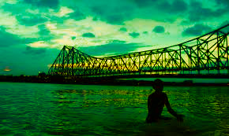
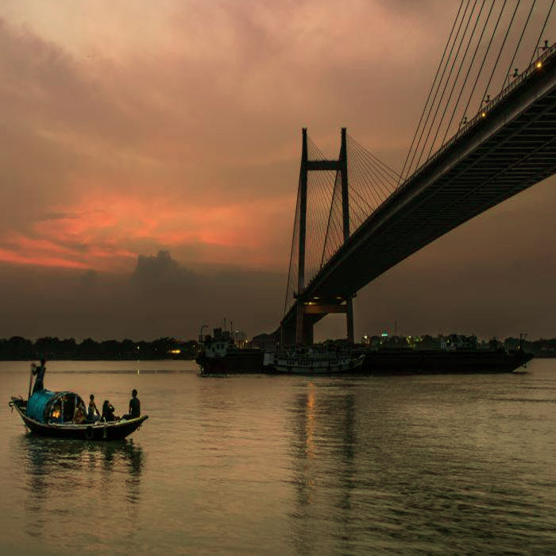

Under Howrah Bridge, Kolkata: The site of several deaths (either due to suicide or drowning accidents), believers speculate that many spirits wander this sacred river Ganges

One of the most haunted places of Kolkata are the banks of beautiful Ganges. The ghats of Ganges, especially those near the Howrah bridge, are haunted. There have been countless unnatural deaths including suicide or drowning accidents.
The undeparted and unsatisfied souls of the accident or suicide victims roam about the area and visible as grey shades. The morning scene is said to be the reason why it features on all lists of most haunted places in Kolkata
People who visit Mullick and Zanana ghat early in the morning see pale images of hands rising out of the water asking for help. Just be a little alert. You may miss to render real helping hand in fear of the frightening spirits.

There is a spot just under the Howrah Bridge which is near the Mullick Ghat flower market which is believed to be center for various paranormal activities in Kolkata. The wrestlers who practice in that area on a daily basis claim that they see flailing hands in the river and they are not sure whether those hands are of human beings or some spirits playing tricks with them. People believe that there are the spirits of those people who lost their life in the Ganges either by committing suicide or by drowning. Some people also recall the incident of witnessing a lady in white, sobbing and calling their name in a nasal tone which lure them into a state of trauma or to their deaths. You try to save the apparitions, you might end up losing your life!
THE END
Thanks,
Feel The Fear